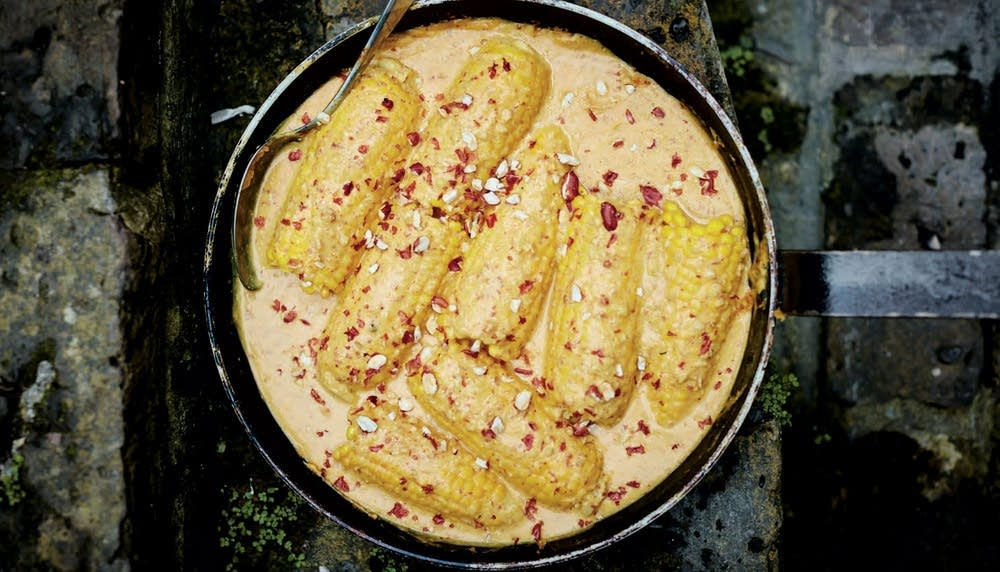

Meera Sodha's Gujarati Corn on the Cob Curry

Description
I absolutely love Meera Sodha's Fresh India cookbook. My mum has been cooking
meals from this book for years now, and it's the only book we really go back to
time and time again. I thought it'd be nice to add a recipe that I haven't tried
before. I saw this the other day and thought it looked delicious.
As someone who's always been a huge fan of Korma and any other creamy curries,
this one looks like it's right up my street. It looks really different from
anything else we've made from the book, so I'm excited to give it a go!
Ingredients
- 120g unsalted peanuts
- 6 corn cobs
- 5 tablespoons rapeseed oil
- 60g chickpea (gram) flour
- 300ml vegan Greek yoghurt
- 1½ teaspoons salt
- ½ teaspoon ground turmeric
- 1½ teaspoons chilli powder
- 1 teaspoon sugar
Steps
- Grind the nuts with a mortar and pestle.
- Cut each cob in half and boil for 6-8 minutes.
- Heat the oil in a large pan over a medium heat.
- Add the chickpea flour and stir to smooth out any lumps.
- When it turns pinkish brown, add the peanuts.
- Reduce to a low heat and cook for 5 minutes, stirring frequently.
- Add the yoghurt, salt, turmeric, chilli powder and sugar
- Increase the heat to medium, add 600ml of water and stir until smooth.
- Add the cobs, cover with a lid and leave for 5 minutes.
- Top with crushed peanuts and serve with rice or chapattis.
Back to Odin Recipes